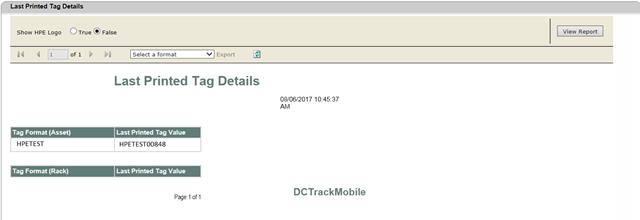

Last Printed Tag Details report will give last printed tag value with different formats for both asset and rack tags.
For example: Asset tags printed in two formats.
1. HPETEST followed by 5-digit numeric number.
2. HPEPROD followed by 5-digit numeric number.
When executed this report will give a list stating what is the last printed tag value for these two formats under asset tags.
To view Last Printed Tag Details Report,
1. Navigate Reports>>Last Printed Tag Details in the DCTrackMobileWeb menu bar.
You will see the Last Printed Tag Details screen.

Figure 160: Last Printed Tag Details Report
|
Copyright © 2019 Hewlett
Packard Enterprise,v5.2.
|